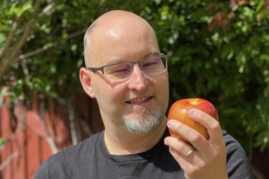
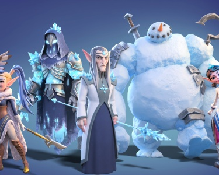

February 12, 2020 Double Loop Games Announces $2.5M Seed Investment Led by London Venture Partners Learn more
Who we are
We're a veteran, women-led mobile team from Kongregate, WB, Zynga, and Blizzard.
-
 Emily Greer
Co-Founder, CEO
Emily Greer
Co-Founder, CEO
Loves tower defense, match-3s, knitting, data, and figure skating @EmilyG
-
 Shelby Moledina
Co-Founder, COO, Game Director
Shelby Moledina
Co-Founder, COO, Game Director
Lifelong gamer, loves to draw, bake pies, play RPGs, and cuddle cute things @ShelbyMoledina
-
 Andy Bond
Technical Director
Andy Bond
Technical Director
Enjoys playing RPGs, building LEGO, and exploring science fiction @LegoCylon
-
 Graham Fratzke
Art Director
Graham Fratzke
Art Director
Professional doodler. Plays games with a controller in one hand and a glass of wine in the other
-
 Min Lieu
Senior Engineer
Min Lieu
Senior Engineer
Avid game player and game maker
-
 Jonathan April
Senior Producer
Jonathan April
Senior Producer
Electronic music enthusiast, loves RPGs, photography, and DC-area sports teams
-
 Kim Herbst
Senior Artist
Kim Herbst
Senior Artist
Draws too much, loves video games, and raises far too many plants
-
 Laura Schumacher
Senior Artist
Laura Schumacher
Senior Artist
Was gaming before she could walk. Loves art, code, nature and aerial dance. Also apparently likes cleaning
-
 William Shook
QA Lead
William Shook
QA Lead
Big fan of cats (all pets, really), Baltimore, social sports, and any form of entertainment
-

Jason Huck
Lead Designer
Dad jokes. Amateur cook. Board game fanatic. Wielder of heavy metal thunder
-
 Mitch Miller
Associate Engineer
Mitch Miller
Associate Engineer
Game jammer, researcher, fixer of things, proc gen world surveyor, traceur @mitch_k_miller
-
 Cat Sze
Art OS Manager
Cat Sze
Art OS Manager
Loves games, cars, art, cryptids, crafts that can be learned from YouTube, order varies frequently
-
 Austin Jose
Lead Puzzle Designer
Austin Jose
Lead Puzzle Designer
A poetic nerd and avid collector with a zest and passion for life
News
Learn more about Double Loop and our philosophy from our blog and conference talks.


February 25, 2021 Hiro Capital Invests $15M in Double Loop, Snowprint, and Happy Volcano Learn more
- Emily Talks to Robin Hunicke on the AIAS Game Maker's Notebook Podcast
- Shelby talks about creativity, designing relaxing games, and Oregon Trail on The Game Dev Podcast
- Emily's Conversation with Joakim Achren on the Elite Game Developers Podcast
- Game UX Summit 2017: "Breaking Through Labels"
- GDC 2013: "Building Games For The Long-Term"
- GDC 2015: "Don't Call Them Whales"
- GDC 2018: "Data-Driven or Data-Blinded? The Uses And Abuses of Analytics In Games"
Games
We believe that the best games are made with love, enthusiasm, and respect for the audience. And the best games, properly supported, are enduring hobbies that connect us to each other.
We are working on a mobile-first title with a planned 2021 launch date. Check back for more information and announcements in the coming months.
Jobs
To make games with longevity, you need teams that are sustainable. We're building an environment that's transparent, respectful, and family-friendly. Our founders are in San Francisco, but we'll hire anywhere with reasonable time zone overlap. Diverse candidates encouraged. Kindness expected.
Current Openings
While we only have a few open positions now we will be hiring engineers, artists, designers, writers, and data scientists later in the year. If you're interested please email jobs@doubleloopgames.com with your resume and we will contact you as we open an appropriate position.
- Development Director
-
Double Loop Games is looking for a Development Director who has a track record and passion for developing and launching mobile games, to oversee production process & execution.
Who we are
We are a well-funded mobile game start-up focused on making delightful, relaxing experiences for the biggest audience in games: people who don’t think of themselves as gamers.
We're building an environment that's transparent, respectful, and family-friendly. Our current team is in California and Oregon, but we're happy to work with people remotely almost anywhere in the Americas, as long as they are within 3 hours of the Pacific Time Zone. Diverse candidates encouraged. Kindness expected.
Who do we want
Double Loop Games is looking for an experienced mobile Development Director who will manage game development and report to our COO/Game Director. We need someone who has a track record and passion for developing, launching, and live operating F2P mobile games, from a studio perspective. The Development Director will manage a 1-2 person Production team and 1-2 person QA team, anchor communication across the development team, manage workflow-considerations and risks, proactively identify process issues and best-practices, and help the project hit its development and product goals. The focus of the role is on ensuring world-class development practices, team efficiency, and team cohesion, but with opportunities to contribute to the vision of some parts of the game.
You would be a perfect match for this position if you thrive in a heavily collaborative and iterative environment, you are enthusiastic about creating smooth & efficient workflows so that the development team can work with low friction, high efficiency, high quality, and high accuracy.
Responsibilities
- Lead Production for a new F2P mobile title through Production, Soft Launch, World-Wide Launch, into long-term live operations. Ensure that the game and team are prepared for smooth live launches and world-class live operations.
- Infuse iteration into process and communication. Optimize for the iterative, data-driven, and sometimes multi-threaded nature of mobile development. And make sure that we regularly capture, review, and act on learnings to continuously improve our culture and processes.
- Work with founders and team leads to ensure that the team has clear priorities and that the game meets time, budget, and product targets.
- Lead the team in driving project scheduling, resource allocation, budgeting, prioritization, task tracking, and problem solving to achieve results.
- Oversee project schedules, productivity towards milestones, and production pathways. Monitor overall development and budgetary considerations.
- Raise awareness of issues, and help remove roadblocks.
- Identify and help alleviate any discrepancies across production efforts. Keep track of requirements and address red flags.
- Monitor Production's handling of feature requests and feasibility based on overall development needs.
- Monitor and balance workloads in order to meet budgets, timelines, and product goals, but also with great focus on minimizing friction and overages for the team. We see development of a live-operated game as a marathon, not a sprint.
- Manage and closely coordinate with the QA team to ensure best-practices for testing and submitting live-operated mobile games, including versioning, test staging, cloning live accounts to test with, and more.
- Work with founders regarding budget, headcount, and timelines for project.
- Assist in the creation, organization, and maintenance of the project’s document and asset filing systems.
- Provide leadership to the Production & QA team with a focus on mentorship and long-term career growth.
- Be a vocal ambassador for the product and team in all scenarios.
Qualifications
- Experience as a development director or executive producer seeing a mobile game/s through the full development cycle, from concept to live operations at a studio.
- 8+ years' experience as an embedded member of a studio development team.
- Experience supervising and developing a team of direct reports.
- Exceptional experience with scheduling and project tracking software (Excel, MS Project, JIRA.)
- Familiarity with bug reporting and related software.
- Deep knowledge of game development across disciplines, and how different departments interact and impact each other.
- Ability to predict/catch issues before they come up, as well as resolve them.
- An eye for detail and a commitment to high standards of quality throughout the game.
- Ability to build partnerships at every level. The kind of person that people want to work for and work with.
- Empathy for fixing the problems of others, respect for others' time.
- Intense passion for video games.
Huge plusses include
- A love of relaxing, delightful gameplay, and beautiful worlds filled with both outdoor spaces and intimate village life.
- A strong desire to step outside of your comfort zone and learn new things.
What are we offering?
- Full-time role with benefits
- Interesting, highly original work in a small, supportive and well-funded start-up led by two women who are industry veterans
- Flexible working arrangements. Work from home wherever you may be as long as you have a reasonable number of overlapping hours with the pacific time zone (+/- 3 hours for this role) and fast, reliable internet connection
Please send your full resume, references, and anything else you think we should see to jobs@doubleloopgames.com.
- Senior Full Stack Engineer
-
Double Loop Games is looking for an experienced full stack engineer to help build the front- and backend infrastructure for a new, original mobile game.
Who we are
We are a well-funded mobile game start-up focused on making delightful, relaxing experiences for the biggest audience in games: people who don’t think of themselves as gamers.
We're building an environment that's transparent, respectful, and family-friendly. Our current team is in California and Oregon, but we're happy to work with people remotely almost anywhere in the Americas, as long as they are within 3 hours of the Pacific Time Zone. Diverse candidates encouraged. Kindness expected.
Who do we want
Double Loop Games is looking for a creative & collaborative engineer to help us build robust yet delightful game features for our new game. The ideal candidate has experience creating a horizontally scalable cloud-based architecture for a mobile game and implementing user-facing frontend features.
Responsibilities
- Collaborate with designers to build server-authoritative features, discover database storage requirements, and prepare for scalability where needed most
- Collaborate with frontend engineers to ensure that backend features are integrated seamlessly
- Document buy versus build options for game features
- Support and deploy multiple simultaneous versions to ensure a graceful upgrade path or facilitate A/B testing
- Identify, measure, and attain service reliability targets with observability sufficient to answer questions we haven’t yet discovered
- Assess and select the right cloud providers for each active region
- Ensure that governmental compliance requirements are satisfied for data retention & deletion (i.e. GDPR)
Qualifications
- Shipped and worked on live ops for a significant DAU game; F2P mobile strongly preferred
- Fluency in Linux/Unix-based server operation
- Fluency in C# and ASP.NET Core
- Experience with frontend development, particularly with Unity
- Proven time-management and estimation skills
- Strong communication skills and willingness to voice opinions
- Ability to publish & use metrics to inform live operations & business decisions
- Built on one or more cloud architectures (i.e. Alibaba, AWS, Azure, GCP)
- Built on one or more scalable databases (i.e. Cassandra, CosmosDB, DynamoDB)
- Built on one or more message brokers (i.e. Kafka, RabbitMQ)
- Utilized infrastructure management technology (i.e. Kubernetes, Terraform)
- Love for making video games
Education
- Bachelor's Degree (or equivalent experience) in Computer Science or related field
The following are a plus but not necessary
- Experience with security on high DAU live games
- Experience with one or more game service platforms (deltaDNA, Firebase, PlayFab)
- Familiarity with the C# async/await model
What are we offering?
- Full-time role with benefits
- Interesting, highly original work in a small, supportive and well-funded start-up led by two women who are industry veterans
- Flexible working arrangements. Work from home wherever you may be as long as you have a reasonable number of overlapping hours with the pacific time zone (+/- 3 hours for this role) and fast, reliable internet connection
Please send your full resume, references, and anything else you think we should see to jobs@doubleloopgames.com.